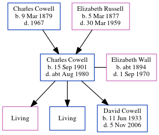

Charles John Cowell 1901 - c1980
[ Home ] | [ Calendar ] | [ Surnames Index ] | [ Census Index ] | [ Family History ]The eldest of 4 children of Charles Cowell (a newsagent) and Elizabeth Russell, Charles Cowell, the first cousin once-removed on the mother's side of Nigel Horne, was born in Woodchurch, Thanet, Kent, England on Sep 15, 19011,2,3,4 and married Elizabeth Wall (a chocolate packer with whom he had 3 children: Joyce Elizabeth, Maurice J and David Frank, along with 2 surviving children) in Tooting, London, England on Jan 20, 19246. On Apr 2, 1911, he was living at Streele Cottages, Billingshurst, Sussex, England7. During 1921, he was serving in the army (regiment: The Royal Regiment Of Artillery; Service number: 741617. Tank corps Service number: 741617. Tank corps).
He died c. Aug 1980 in Surrey, England5.
Parents
- Charles Percy was born on Mar 9, 1879
- Elizabeth Ellen was born on Mar 5, 1877
Children
- David Frank was born on Jun 11, 1933
Citations
- 1911 England Census Online publication - Provo, UT, USA: Ancestry.com Operations, Inc., 2011.Original data - Census Returns of England and Wales, 1911. Kew, Surrey, England: The National Archives of the UK (TNA), 1911. Data imaged from the National Archives, London, England.
- England & Wales, FreeBMD Birth Index, 1837-1915 Online publication - Provo, UT, USA: The Generations Network, Inc., 2006.Original data - General Register Office. England and Wales Civil Registration Indexes. London, England: General Register Office. © Crown copyright. Published by permission of the Cont
- Royal Artillery Attestations 1883-1942 - Findmypast
- World War 2 Allies Collection - Findmypast
- England & Wales deaths 1837-2007 - Findmypast
- London, England; London Metropolitan Archives; Church of England Parish Registers, 1754-1921; Reference Number: P95/NIC/026
- 1911 Census for England & Wales - Findmypast (was age 8 and the son of the head of the household)
Media
England & Wales births 1837-2006 - BMD/B/1902/4/AZ/000132/009
England & Wales deaths 1837-2007 - BMD/D/1980/3/AZ/000206/017
Royal Artillery attestations 1883-1942 Image - GBM-ROYALART-740801-741790-00166
1911 Census for England & Wales - GBC/1911/RG14/05302/0043/3
England & Wales marriages 1837-2005 - BMD/M/1924/1/AZ/000155/042
World War 2 Allies Collection - WW2/03297400
Family Tree
Generated by ged2site. Last updated on Jun 11, 2024